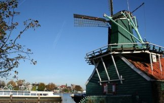
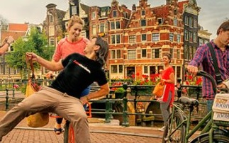

OLANDA.COM , PER LE TUE PRENOTAZIONI AFFIDATI AI MIGLIORI!
_____________________________________
Visita l'Olanda _______
Prenota il tuo viaggio _______
Guarda la sua Mappa
_______
Esplora Olanda.com
Tutto quello che desideri sapere dell'Olanda in un'unica posizione.
Informazioni variegate e suggerimenti interessanti su città, natura, eventi e attrazioni.
Ampia offerta di case vacanza, hotel e Bed and Breakfast.
destinazioni, prenotazioni online, suggerimenti e idee per le tue vacanze in Olanda
Puoi Ammirare
_______

Puoi Esplorare
_______

Puoi Conoscere
_______
Soggiorni brevi nelle città olandesi
Visita i musei di Amsterdam, scopri l'architettura e il design innovativi di Rotterdam o
vivi una fantastica esperienza culinaria a Maastricht: le città olandesi sono mete ideali per soggiorni brevi.
Esplora la natura olandese
Cerchi tranquillità e grandi spazi aperti? Anche in questo caso Olanda.com sa darti i suggerimenti giusti.
Godi dei 250 chilometri di coste magnifiche, caratterizzate dalle splendide dune, e delle decine di parchi naturali sconfinati
come il Veluwe e gli Oostvaardersplassen. Se visiti l'Olanda in primavera non puoi rinunciare ad un'escursione attraverso i variopinti campi di fiori.
Prenota fin d'ora le tue vacanze in Olanda
Sei entusiasta all'idea di visitare l'Olanda? Prenota subito su Olanda.com e approfitta delle migliori offerte.
Che si tratti di un hotel o di una casa vacanza, di una vacanza in bicicletta completamente organizzata o dei biglietti per un'escursione,
un parco dei divertimenti o un museo, con Olanda.com hai la certezza di ottenere le informazioni giuste e i prezzi più vantaggiosi.